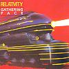

Celtic Lyrics Corner > Artists & Groups > Relativity > Gathering Pace
|  |
Gathering Pace
(1987) |
| Tracks : |
1. Blackwell Court/Highland Laddie/Gillies' Taxis/The Double Rise
2. Gathering Pace 3. Rosc Catha Na Mumhan 4. Miss Tara MacAdam/The First Train To Kyle 5. Má Théid Tú Ún Aonaigh 6. Siún Ní Dhuibhir 7. When She Sleeps 8. Said Johnny To Molly 9. The Monday Morning Reel/Cutting A Slide/Robert The Minnow/Hogties' Reel 10. Ceol Anna/A Rìbhinn Òg Bheil Cuimhn' Agad |